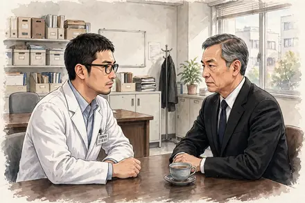

第7話・全9章・完結
曲がらない所見
法医解剖医コメディ ・ 約7,546字 ・ 読了 約15分
警視庁の管理官・梶原が教室に来る。期限と一文を巡る、静かな圧力。
第1章 著名な死人
月曜の朝、教室のテレビは普段ついていないのに、ついていた。
「……不動産大手、翔和地所の代表取締役社長、高島宗一郎さんが、昨夜、自宅の書斎で亡くなっているのが見つかりました。頭部に傷があり、警視庁は事件と事故の両面で捜査しています……」
五十嵐俊介は、テレビの前で飴を舐めながら首を傾げた。
「著名な死人は、ろくなことにならんな」
「五十嵐先生、その言い方、やめてください」
会田麻衣が、眉ひとつ動かさずに書類を揃えた。今朝の麻衣は、紺のカーディガンに白いブラウス、小さな金のピアスが揺れている。おしゃれは手を抜かないが、仕事の手も止めない。
「だってそうやろ。無名の死人は静かに解剖できる。著名な死人は、解剖台に乗る前から、周りが勝手に死因を決めとる」
「もう決まってますよ」
麻衣がスマホの画面を向けた。ニュースサイトの見出しが並んでいる。
『社長急死、頭部に傷』『他殺か、事故か』『経営を巡るトラブルの噂も』
「早いなあ。遺体、まだうちに来てへんのに」
「司法解剖の依頼は、正式に来ています」
麻衣が依頼書を差し出した。高島宗一郎、五十八歳。昨夜、自宅の書斎で倒れているのを妻が発見。頭部に裂傷あり。死因の特定と、事件性の有無の判断を求める――いつもの文面だった。
違うのは、その下に添えられた電話のメモだった。
「……警視庁捜査一課、管理官の梶原さんから、お電話がありました」
俊介の飴が、口の中で止まった。
麻衣が一週間いなかったあの週に、電話の向こうで静かに名乗った男。声を荒らげることなく、「依頼の割り振りについて、見直しが必要かもしれませんな」と言った男。
「何て？」
「所見は金曜日までにお願いしたい、と。世間が騒いでいるので、慎重かつ迅速に、だそうです」
「慎重かつ迅速。どっちやねん」
「両方だそうです」
俊介は依頼書を、机の書類の山の一番上に置いた。山は今日も平和にそびえている。
「……金曜か。週末の予定、入れられへんな」
「先生の週末の予定なんて、きゅんとぴあくらいしかないじゃないですか」
「それが大事なんや」
電話が鳴った。麻衣が出て、すぐに受話器を俊介に向けた。
「ご本人からです」
俊介は小さく息を吐いて、受話器を取った。
「はい、五十嵐です」
「梶原です」
静かな声だった。怒ってもいない、急いでもいない。ただ、静かだった。
「高島の件、よろしくお願いします。金曜日まで、というのは先ほどお伝えした通りです」
「解剖は明日やります。でも管理官、所見の日付は、遺体が決めるんですわ。金曜に間に合うかどうかは――」
「間に合わせてください」
初めて、声が少しだけ硬くなった。
「マスコミが勝手なことを書いています。このままでは、ご遺族も、世間も、収まりません。先生の所見ひとつで、静まるんです」
「……あのな、梶原さん」
「はい」
「所見は、静めるためのもんとちゃいますよ」
短い沈黙があった。
「分かっています。では、金曜日に」
電話は切れた。俊介は受話器を置いて、飴を噛み砕いた。
「……麻衣ちゃん」
「はい」
「今週は、なんか荒れそうや」
「荒れる前に、先生、その机、どうにかなりませんか」
「ならん」
第2章 神の解剖
火曜日、解剖室。
高島宗一郎の遺体が、台の上にあった。五十八歳。がっしりした体格で、生前はエネルギッシュな経営者として知られていたという。テレビの中の男は、いまは静かに横たわっている。
「始めます」
相沢直樹が、緊張した面持ちで記録の準備をした。真面目な男は、今日もノートを三冊並べている。
まず外表。頭部の裂傷は、右の側頭部に一か所。創の縁は比較的きれいで、周囲に腫れは少ない。手や腕に、殴られまいと庇ったような傷――防御創は、ない。
「先生、頭の傷、これは……」
「まだ決めるな。開けてからや」
俊介の声が変わった。解剖台の前に立つと、この男は別人になる。
胸を開く。心臓を取り出す。相沢が息を呑んだ。
冠動脈は、ひどく細くなっていた。動脈硬化が進み、左の冠動脈には新しい血栓が詰まっている。心筋の一部は、色が変わり始めていた。
「急性心筋梗塞、ですね」
「ああ。心臓は限界やった。いつ止まってもおかしくない状態や」
その時だった。
光が差すように、映像が降りてきた。
――夜の書斎。デスクに座る高島。電話の受話器を耳に当て、何か言い争うような口調。やがて受話器を置き、立ち上がろうとして、胸を押さえた。顔が歪む。一歩、二歩。体が傾ぎ、手が空を掴み、デスクの角に、頭の横が当たった。音はなかった。男はそのまま、デスクの脇に崩れ落ちた。
部屋に、他の人間はいなかった。
映像は、そこで途切れた。
俊介はゆっくり息を吐いた。
「……相沢」
「はい」
「頭の傷やけどな」
俊介は創をもう一度見た。腫れが少ないのには、理由があった。
「倒れる時に打った傷は、こうなる。心臓が止まりかけて、血の巡りが落ちてる。打っても腫れへん。殴られた傷とは、違う」
「じゃあ、死因は……」
「心筋梗塞による急死。頭部打撲は、倒れた時に机の角で打ったものと矛盾しない」
俊介は淡々と言った。
「他殺の所見は、ひとつもない。誰もおらんかった」
相沢が、ノートに勢いよく書き込んだ。
解剖は昼前に終わった。俊介は手袋を外しながら、窓の外を見た。テレビ局の車が、大学の正門の前に一台、止まっていた。
「……もう来とる」
「マスコミですか」
「著名な死人は、静かにはさせてもらえへんのよ」
第3章 書きすぎた一文
水曜日、相沢が警察向けの要約を持ってきた。
「中間報告の下書きです。確認をお願いします」
几帳面な字で、所見が要約されていた。心筋梗塞による急死。頭部打撲は転倒によるものと矛盾しない。――そこまでは良かった。最後に、一文が足されていた。
『なお、他殺の可能性は否定される』
俊介はその一行を、指でなぞった。
「相沢」
「はい」
「"否定される"って、誰が否定したんや」
「え……いえ、所見から、他殺はなかったと……」
「なかったんやない。"出てへん"だけや」
相沢が固まった。
「解剖はな、"あったもん"を拾う仕事や。"ない"ことを証明する道具やない。心臓も、傷も、全部出たもんを書く。そこに書いてない一文を足したら、それは所見やのうて、作文や」
「……申し訳ありません」
「謝ることやない。覚えとけ、って話や」
俊介はペンを取り、その一行に線を引いた。
「出たもんだけ書け。それが一番強い」
相沢が深く頭を下げて下書きを持ち帰った、その午後だった。
麻衣が、内線を回してきた。
「警視庁の事務方からです。中間報告について」
電話の相手は、梶原ではなかった。事務方の、丁寧な、しかし事務的な声だった。
「中間報告の文面について、お願いがありまして。末尾に『他殺の疑いはない』との一文を、入れていただけないでしょうか。世間への説明の都合でして」
俊介は椅子に深く座り直した。
「……それは、誰の指示ですか」
「管理官の意向と、お考えください」
「ほな、管理官に伝えてください」
俊介の声は穏やかだった。穏やかだったが、譲らなかった。
「中間報告に書くのは、出た所見だけです。疑いがあるかないかは、捜査が決めることや。こっちの領分とちゃいます」
電話の向こうで、短い沈黙があった。
「……承知しました。管理官に、そう伝えます」
電話が切れる。麻衣が、無言でお茶を置いた。
「麻衣ちゃん」
「はい」
「この言い方やと、明日あたり、本人が来るで」
「でしょうね」
麻衣は依頼書の束を揃えた。
「コピー機の紙は、補充しておきます」
「なんでや」
「荒れた週は、紙がよく詰まるんです」
俊介は笑った。この教室の事務員は、天気予報より当たる。
第4章 管理官、来室
木曜日の午後、梶原誠が教室に来た。
黒のスーツに、目立たないネクタイ。五十六歳。背筋は伸びているが、威圧するような大きさはない。秘書も連れず、一人だった。
「お忙しいところ、すみません」
麻衣が応接の隅に茶を置いた。梶原は律儀に頭を下げ、その茶に手をつけなかった。
「五十嵐先生。高島の件、所見の進み具合を伺いに来ました」
「明日、金曜日には出しますよ。今日はその確認ですか」
「それもあります」
梶原は、静かに切り出した。
「中間報告の件、事務方から聞きました。"疑いはない"の一文は、入れていただけない、と」
「入れられへんのです。領分が違う」
「世間は、先生方が思うより、ずっと単純な言葉で動きます。"疑いはない"と書けば、報道は静まる。書かなければ、"言えない何かがある"と書くんです」
「それは世間の勝手でしょう」
「勝手、ですか」
梶原の目が、少し細くなった。
「来年度の話をしましょう。法医学教室への解剖依頼の配分は、見直しの時期に来ています。処理の速さ、警察との連携。そういうものも、評価の対象になるんです」
俊介の笑みが消えた。
「……脅しですか」
「事実を申し上げているだけです」
梶原は初めて茶に口をつけた。
「郷田先生も、来年度でお見送りと伺っています。教授のいない教室が、配分でどう扱われるか。先生も、お考えになった方がいい」
沈黙が落ちた。麻衣が、部屋の隅で、書類を揃える手を止めていない。止めていないが、その音がいつもより小さい。
「梶原さん」
俊介は、飴の袋に手を伸ばしかけて、やめた。
「あんた、解剖室に入ったことありますか」
「……ありません」
「台の上の人はな、嘘をつかへん。でも、口もきかへん。やから、こっちが勝手なことを書いたら、その人は一生、間違ったまま記録されるんです」
俊介はまっすぐ梶原を見た。
「所見は、頼まれた結論を書く欄やないです。配分の話は、配分の席でしてください。ここは解剖の教室です」
長い沈黙があった。
梶原は、ゆっくりと立ち上がった。
「……金曜日、待っています」
ドアが閉まる。麻衣が、小さく息を吐いた。
「五十嵐先生」
「なんや」
「いまの、ちょっとカッコよかったですよ」
「……ほんまか」
「茶、冷めてから飲むところは、損してましたけど」
俊介は吹き出した。
第5章 書類の山、向こうの山
その日から、警視庁の事務方からの連絡が、目に見えて増えた。
所見の提出様式について。写しの部数について。添付資料の様式第何号が旧版であることについて。中間報告の写しを、もう一部。押印の位置が、規定と数ミリ違うことについて。
「……嫌がらせ、ですかね」
相沢が、心配そうにFAXの束を見た。
「嫌がらせやないよ、相沢くん」
麻衣は、束を迷いなく捌いていく。様式は最新版に差し替え、部数は言われる前に揃え、印の位置は定規で測る。返信の文面は、どの指摘にも、礼儀正しく、しかし一分の隙もなく正確だった。
「向こうは仕事をしてるだけ。こっちも仕事をするだけ」
「会田さん、すごいな……」
「すごくないです。当たり前のことを、当たり前にやってるだけです」
その日の夕方、俊介は気づいた。
麻衣の机の端に、見慣れないファイルが一冊、置かれている。背表紙には、何も書かれていない。
「麻衣ちゃん、それ何や」
「高島の件の、やり取りの控えです」
中を開くと、警視庁からの依頼書、電話のメモ、中間報告の写し、様式の指摘と、それへの回答。全部が、日時順に、きれいに綴じられていた。
「……なんでこんなもん、作ってんの」
「後で、何か言われた時のためです」
麻衣は平然と言った。
「誰が、いつ、何を頼んで、私たちがどう答えたか。全部、ここにあります。所見が曲がらなかった証拠は、解剖室だけじゃなくて、こっちにも要るんです」
俊介は、しばらくファイルを見ていた。
「……助かるわ」
珍しく、素直な言葉だった。麻衣は一瞬だけ手を止めて、すぐに書類に目を戻した。
「当たり前のことを、しただけです」
耳が、少し赤かった気がした。
第6章 遺族の怒り
金曜日の朝、高島恵子が教室を訪れた。
五十二歳。喪服ではないが、黒っぽい装いで、目は泣き腫らしていた。秘書らしい若い男を一人、連れている。
「主人は、殺されたんです」
開口一番、そう言った。
「会社には、敵がたくさんいました。再開発の利権で、恨んでいる人間もいる。頭に傷があったんでしょう？ あれが転んだ傷なわけ、ないじゃありませんか」
「恵子さん」
俊介は、椅子を勧めた。ふざけた様子は、どこにもなかった。
「ご主人の体を、全部見ました。心臓が、限界だったんです。冠動脈が細くなって、血栓が詰まっていた。発作が起きて、倒れた。その時に、机の角で頭を打った。傷の形も、腫れ方も、全部それで説明がつきます」
「でも――」
「殴られた傷は、もっと腫れます。庇った傷が、手に残ります。ご主人には、どっちもなかった」
恵子の目に、涙が溜まった。
「じゃあ主人は……誰にも殺されずに、勝手に死んだっていうんですか。そんなの、あまりにも……」
声が震えた。秘書の男が、ハンカチを差し出した。
俊介は、少し間を置いて、静かに言った。
「出てないもんを、あるとは言えません」
「……」
「でも、出たもんは、誰にも曲げさせません。警察にも、マスコミにも、わたしにも。ご主人の心臓が限界やったこと、最後に一人で倒れたこと。それは、ご主人の体が残した、本当のことです」
恵子は、しばらく泣いていた。やがて、震える声で言った。
「……主人は、最後の日も、仕事の電話をしてたんです。書斎で。私が止めても、聞かなくて」
「映像――いえ、様子からすると、電話の後やったと思います」
俊介は言い直した。
「誰かと争ったんやない。体が、先に悲鳴を上げたんです」
恵子は頷いて、ハンカチで目を押さえた。
帰り際、彼女はドアの前で立ち止まった。
「先生。所見は……その通りに、出してください」
「出します」
ドアが閉まって、教室に静けさが戻った。相沢が、小さな声で言った。
「……先生、今の言葉、所見より伝わってました」
「所見はな、相沢」
俊介は飴を一粒、口に入れた。
「伝わらんから、正確なんや」
第7章 教授の背中
その日の昼過ぎ、郷田正樹が梶原と会った。
場所は大学の応接室。俊介は同席しなかった。後で麻衣が、廊下で見かけた二人の様子を教えてくれた。
「郷田先生、いつもの顔でしたよ。穏やかな、怖い顔」
郷田が何を言ったかは、その日の夕方、本人から聞いた。
「五十嵐」
解剖室の前の廊下で、郷田は穏やかに言った。
「警視庁には、伝えておいた。所見は解剖した者が書く。それがこの教室の決まりだ、と」
「……教授」
「配分の話も出た」
郷田は、少しだけ笑った。
「来月、配分の協議会があるそうだ。うちは、少し不利になるかもしれん」
「教授、それは――」
「構わん」
郷田は首を振った。
「配分は、減れば減ったで、やるしかない。だが、所見を曲げた教室には、もう何も残らん。減らされる依頼と、曲げた所見。どっちが取り返しがつかんか、考えるまでもないだろう」
俊介は、何も言えなかった。
「五十嵐。君は所見だけを見ていろ」
郷田は、解剖室のドアに手をかけた。
「面倒は、私の仕事だ。それが教授というものだろう」
ドアが開いて、郷田は中に入っていった。その背中を、俊介はしばらく見ていた。
「来年度で終わり」という言葉を、郷田自身が口にしたことは、まだない。だが俊介は知っていた。麻衣がいなかったあの週に、本人の口から聞いていたからだ。
――この人がいなくなった後、この教室は、誰が背負うのか。
ふと、そんな考えが頭をよぎった。俊介は慌てて、飴を噛み砕いた。
「……考えたら負けや」
「何がですか」
いつの間にか、麻衣が横に立っていた。
「なんでもない」
「教授、かっこよかったですね」
「……ああ」
俊介は珍しく、素直に頷いた。
「あの背中には、勝たれへん」
第8章 金曜日
金曜日、所見が提出された。
文面は、俊介が最初に書いた、そのままだった。
死因は急性心筋梗塞による急死。頭部打撲は、倒れた際に家具に当たったものと矛盾しない。他殺を示す所見は、認められない。
「認められない」。「ない」とは、書いていない。出たものだけを、出た通りに。
提出の控えは、麻衣が例のファイルに綴じた。これで、この一週間のやり取りは、全部が記録に残った。
夕方、梶原から電話があった。
「所見、受け取りました」
「……はい」
「正直に言います。上の者は、不満なようです。"疑いはない"と、なぜ書けないのか、と」
「管理官は、どう思うんですか」
少しの沈黙の後、梶原は言った。
「私は、解剖室に入ったことがありませんから」
俊介は、思わず受話器を持ち直した。
「台の上の人は、嘘をつかない。先生の言葉です。……今回は、教室の流儀を、尊重しましょう」
「梶原さん」
「ただし」
声が、静かに硬くなった。
「次も同じとは、限りません。配分の協議は、来月です。教室の将来は、先生方の仕事ぶり次第だと思ってください」
「……分かってます」
「では」
電話は切れた。
その夜のニュースは、短かった。
『翔和地所の高島社長、死因は心筋梗塞と判明。警視庁は事件性なしと判断』
テレビの前で、俊介は飴を舐めていた。
「静まったな」
「静まりましたね」
麻衣が書類を棚に戻しながら言った。
「でも、勝った感じは、しませんね」
「勝ち負けの話やないからな」
俊介はテレビを消した。
「ただ、曲がらんかった。それだけや」
第9章 いつもの教室
翌週の月曜日、教室はいつも通りだった。
違うのは、相沢のノートだった。解剖の記録が、以前よりずっと揃っている。時系列も、付箋の位置も、きれいに統一されていた。
「相沢くん、あんたのノート、急に整ってきたな」
「会田さんに、教わりました」
相沢は照れたように言った。
「順番は変えずに、揃える。……先生の机も、そのうち」
「俺の机は、揃えんでええ。あれはあれで、順番があるんや」
「あるんですか、あれに」
「あるんや」
麻衣が、例のファイルを棚に収めた。背表紙には、小さな字で『高島宗一郎氏 解剖・所見関係綴』と書かれている。
「麻衣ちゃん」
「はい」
「結局、あのファイル、出番なかったな」
「なかったです」
麻衣は棚の扉を閉めた。
「出番がないのが、一番いいんです。でも、あるのとないのでは、違います」
俊介は肩をすくめた。
「……ほんま、事務員は強いな」
「五十嵐先生」
郷田の声がした。振り向くと、教授が立っている。手には、来月の配分協議会の案内状が握られていた。
郷田はそれを、俊介に見せるでもなく、自分の机に置いた。
「人員の補充だがね」
「お、教授、ついに動いてくれますか」
「来年度の予算要求に、入れてはおいた」
「ほんまですか！」
「通るかどうかは、知らん」
俊介は机の書類の山を見て、自分の飴を見て、それから天井を見た。
「……まあ、一歩前進、ってことにしときます」
「そうしてくれ」
郷田は笑って、教授室に戻っていった。
麻衣が、小さく言った。
「先生、今日はもう一件、解剖が入ってますよ」
「……嘘やろ」
「本当です」
俊介は飴を噛み砕いて、立ち上がった。
「早く人員補充してくださいよ、ほんまに」
白衣の裾を翻して、解剖室へ向かう。その背中を、麻衣と相沢が並んで見送った。
いつもの教室の、いつもの月曜日だった。
― 完 ―
読んでくださって、ありがとうございます。
一言でも構いません、感想をいただけると励みになります。